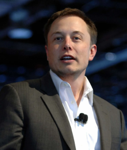

Elon Musk
Elon Musk (born June 28, 1971, Pretoria, South Africa) South African-born American entrepreneur who cofounded the electronic-payment firm PayPal and formed SpaceX, maker of launch vehicles and spacecraft. He was also one of the first significant investors in, as well as chief executive officer of, the electric car manufacturer Tesla. In addition, Musk acquired Twitter (later X) in 2022. At age 12 he created a video game and sold it to a computer magazine.